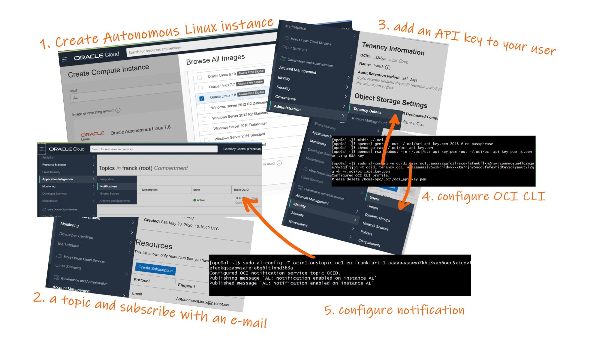

This was first published on https://www.dbi-services.com/blog/al7/ (2020-06-30)
Republishing here for new followers. The content is related to the versions available at the publication date.
.
Oracle Enterprise Linux (OEL) is a Linux distribution which is binary compatible with Red Hat Enterprise Linux (RHEL). However, unlike RHEL, OEL is open source, free to download, free to use, free to distribute, free to update and gets free bug fixes. And there are more frequent updates in OEL than in CentOS, the free base of RHEL. You can pay a subscription for additional support and features (like Ksplice or Dtrace) in OEL. It can run the same kernel as RHEL but also provides, still for free, the ‘unbreakable kernel’ (UEK) which is still compatible with RHEL but enhanced with optimizations, recommended especially when running Oracle products.
This is not new and I didn’t resist to illustrate the previous paragraph with the animated gif from the years of this UEK arrival. What is new is that OEL is also the base for the new Autonomous Linux which can run in the Oracle Cloud, automates Ksplice for updating the system online, without restart, and sending notifications about these updates. You can use it in the Oracle Cloud Free Tier.
When creating an Always Free compute instance you select the Oracle Autonomous Linux image. I’ve summarized all steps there:

[opc@al ~]$ mkdir ~/.oci
[opc@al ~]$ openssl genrsa -out ~/.oci/oci_api_key.pem 2048 # no passphrase
[opc@al ~]$ chmod go-rwx ~/.oci/oci_api_key.pem
[opc@al ~]$ openssl rsa -pubout -in ~/.oci/oci_api_key.pem -out ~/.oci/oci_api_key_public.pem
writing RSA key
This generates an API key temporarily.
[opc@al ~]$ sudo al-config -u ocid1.user.oc1..aaaaaaaafo2liscovfefeubflxm2rswrzpnnmosue4lczmgaaodwtqdljj3q -t ocid1.tenancy.oc1..aaaaaaaazlv5wxkdhldyvxkkta7rjn25ocovfefexhidte5zgiyauut2i2gq -k ~/.oci/oci_api_key.pem
Configured OCI CLI profile.
Please delete /home/opc/.oci/oci_api_key.pem
This configures the OCI CLI profile for my user (ocid1.user.oc1.. is my user OCID which I find in Oracle Cloud » Governance and Administration » Identity » Users » Users Detail » OCID copy) in my tenancy (ocid1.tenancy.oc1.. is my tenancy OCI I find in Oracle Cloud » Governance and Administration » Administration » Tenancy Details » OCID copy).
When something happens autonomously you want to be notified for it. This uses the OCI notification service with a topic you subscribe to. This is also available in the Free Tier. The topic is created with Oracle Cloud » Application Integration » Notifications » Create Topic, where you just put a name and a description and get the OCID for it (ocid1.onstopic.oc1.eu-frankfurt-1… for me).
While in the console, on this topic I’ve created a subscription where I have put my e-mail address. I’ll receive by e-mail all notifications sent to this topic.
[opc@al ~]$ sudo al-config -T ocid1.onstopic.oc1.eu-frankfurt-1.aaaaaaaaamo7khj3xab6oec5xtcovfefeokqszapwsafeje6g6ltlnhd363a
Configured OCI notification service topic OCID.
Publishing message 'AL: Notification enabled on instance AL'
Published message 'AL: Notification enabled on instance AL'
In the Autonomous Linux instance I’ve setup the OCI notification service topic OCID. And that’s all.
Check your e-mails, you have to acknowledge the reception of notifications of course.
[opc@al ~]$ uname -a
Linux al 4.14.35-1902.301.1.el7uek.x86_64 #2 SMP Tue Mar 31 16:50:32 PDT 2020 x86_64 x86_64 x86_64 GNU/Linux
Here is the kernel version that has been installed
[opc@al ~]$ sudo uptrack-uname -a
Linux al 4.14.35-1902.302.2.el7uek.x86_64 #2 SMP Fri Apr 24 14:24:11 PDT 2020 x86_64 x86_64 x86_64 GNU/Linux
This is the effective kernel updated with Ksplice
[opc@al ~]$ sudo uptrack-show
Installed updates:
[cp1p7rl5] Known exploit detection.
[3kfqruxl] Known exploit detection for CVE-2017-7308.
[6vy9wlov] Known exploit detection for CVE-2018-14634.
[r8wncd28] KPTI enablement for Ksplice.
[3e9je971] Known exploit detection for CVE-2018-18445.
[20bmudk6] Out-of-bounds access when classifying network packets with traffic control index.
[oy5cke5u] NULL dereference while writing Hyper-V SINT14 MSR.
[5jsm8lzj] CVE-2020-9383: Information leak in floppy disk driver.
[5p7yd05e] NULL pointer dereference when initializing Differentiated Services marker driver.
[sajmv0xh] CVE-2018-19854: Information leak in cryptography socket NETLINK_CRYPTO call.
[1gefn4lp] CVE-2019-19965: Denial-of-service in SCSI device removal.
[6hu77eez] Invalid memory access when sending an excessively large packet using Segmentation Offloads.
[f0zxddhg] Livelock in loop device block resize operation.
[2lgm3hz9] CVE-2019-14814, CVE-2019-14815, CVE-2019-14816: Denial-of-service when parsing access point settings in Marvell WiFi-Ex driver.
[3yqxyw42] CVE-2019-20096: Memory leak while changing DCCP socket SP feature values.
[9g5kf79r] Improved fix for CVE-2020-2732: Privilege escalation in Intel KVM nested emulation.
[bq9hiiuj] Race condition in ipoib during high request load causes denial-of-service.
[3youemoz] CVE-2020-11494: Information leak in serial line CAN device communication.
[jpbi3wnm] Use-after-free when removing generic block device.
[if1ety6t] Memory corruption when reading EFI sysfs entries.
[iv8r17d8] CVE-2020-8648: Use-after-free in virtual terminal selection buffer.
[mojwd0zk] Various Spectre-V1 information leaks in KVM.
[nvi6r5wx] CVE-2019-19527: Denial-of-service in USB HID device open.
[o3df6mds] CVE-2020-8647, CVE-2020-8649: Use-after-free in the VGA text console driver.
[kjyqg48a] CVE-2019-19532: Denial-of-service when initializing HID devices.
[74j9dhee] Divide-by-zero when CPU capacity changes causes denial-of-service.
[lgsoxuy7] CVE-2019-19768: Use-after-free when reporting an IO trace.
Effective kernel version is 4.14.35-1902.302.2.el7uek
all details are there about the fixes applied by Ksplice, without any reboot.
I’ve created that on May 23th, 2020 and writing this one month later.
Here are the e-mails I’ve received from the topic subscription:
And my current machine state:
[opc@al ~]$ uptime
19:26:39 up 38 days, 13:49, 2 users, load average: 0.07, 0.02, 0.00
[opc@al ~]$ uname -a
Linux al 4.14.35-1902.301.1.el7uek.x86_64 #2 SMP Tue Mar 31 16:50:32 PDT 2020 x86_64 x86_64 x86_64 GNU/Linux
[opc@al ~]$ sudo uptrack-uname -a
Linux al 4.14.35-1902.303.4.1.el7uek.x86_64 #2 SMP Fri May 29 14:56:41 PDT 2020 x86_64 x86_64 x86_64 GNU/Linux
[opc@al ~]$
The VM has been running 24/7 without outage and the effective kernel is now higher than when installed.
This effective kernel has been updated on Tue Jun 16 08:04:33 GMT 2020 as reported by this e-mail I received:
noreply@notification.eu-frankfurt-1.oraclecloud.com
Jun 16, 2020, 10:04 AM
to AutonomousLinux
+------------------------------------------------------------------------+
| Summary (Tue Jun 16 08:04:33 GMT 2020) |
+------------------------------------------------------------------------+
Ksplice updates installed: yes
Yum updates installed: no
Uptime: 08:04:33 up 24 days, 2:27, 0 users, load average: 0.72, 0.20, 0.06
+------------------------------------------------------------------------+
| Ksplice upgrade report |
+------------------------------------------------------------------------+
Running 'ksplice -y all upgrade'.
Updating on-disk packages for new processes
Loaded plugins: langpacks
No packages marked for update
Nothing to do.
The following steps will be taken:
Install [i622mubr] Information leak in KVM_HC_CLOCK_PAIRING hypercall.
Install [35xnb9pi] CVE-2019-9500: Potential heap overflow in Broadcom FullMAC WLAN driver.
Install [ppqwl5uh] CVE-2019-15505: Out-of-bounds access in Technisat DVB-S/S2 USB2.0 driver.
Install [ctobm6wo] CVE-2019-19767: Use-after-free in with malformed ext4 filesystems.
Install [l5so0kqe] CVE-2019-19056, CVE-2019-19057: Denial-of-service in the Marvell mwifiex PCIe driver.
Install [b4iszmv7] CVE-2019-20636: Out-of-bounds write via crafted keycode table.
Install [5oec4s3n] Denial-of-service when mounting an ocfs2 filesystem.
Install [rafq9pe9] CVE-2019-9503: Denial-of-service when receiving firmware event frames over a Broadcom WLAN USB dongle.
Install [nlpu7kxi] Denial-of-service when initializing a serial CAN device.
Install [lnz9di5t] CVE-2020-11608: NULL pointer dereference when initializing USB GSPCA based webcams.
Install [2bodr9yk] CVE-2019-19537: Denial-of-service in USB character device registration.
Install [9iw2y1wn] CVE-2019-19524: Use-after-free when unregistering memoryless force-feedback driver.
Install [h5s7eh41] CVE-2020-11609: NULL pointer dereference when initializing STV06XX USB Camera device.
Install [behlqry8] Denial-of-service via invalid TSC values in KVM.
Install [onllaobw] CVE-2019-12819: Use-after-free during initialization of MDIO bus driver.
Install [fdn63bdc] CVE-2019-11599: Information leak in the coredump implementation.
Install [kb3b03z9] CVE-2019-19058: Denial-of-service in iwlwifi firmware interface.
Install [mgfi6p6r] Use-after-free when writing to SLIP serial line.
Install [hs2h9j8w] CVE-2019-14896, CVE-2019-14897: Denial-of-service when parsing BSS in Marvell 8xxx Libertas WLAN driver.
Install [bb9sd52m] CVE-2020-11668: NULL pointer dereference when initializing Xirlink C-It USB camera device.
Install [p4ygwgyj] Information leak in KVM's VMX operation path.
Install [1uxt1xo6] NFSv4 client fails to correctly renew lease when using fsinfo.
Install [hjoeh3zi] CVE-2020-0543: Side-channel information leak using SRBDS.
Installing [i622mubr] Information leak in KVM_HC_CLOCK_PAIRING hypercall.
Installing [35xnb9pi] CVE-2019-9500: Potential heap overflow in Broadcom FullMAC WLAN driver.
Installing [ppqwl5uh] CVE-2019-15505: Out-of-bounds access in Technisat DVB-S/S2 USB2.0 driver.
Installing [ctobm6wo] CVE-2019-19767: Use-after-free in with malformed ext4 filesystems.
Installing [l5so0kqe] CVE-2019-19056, CVE-2019-19057: Denial-of-service in the Marvell mwifiex PCIe driver.
Installing [b4iszmv7] CVE-2019-20636: Out-of-bounds write via crafted keycode table.
Installing [5oec4s3n] Denial-of-service when mounting an ocfs2 filesystem.
Installing [rafq9pe9] CVE-2019-9503: Denial-of-service when receiving firmware event frames over a Broadcom WLAN USB dongle.
Installing [nlpu7kxi] Denial-of-service when initializing a serial CAN device.
Installing [lnz9di5t] CVE-2020-11608: NULL pointer dereference when initializing USB GSPCA based webcams.
Installing [2bodr9yk] CVE-2019-19537: Denial-of-service in USB character device registration.
Installing [9iw2y1wn] CVE-2019-19524: Use-after-free when unregistering memoryless force-feedback driver.
Installing [h5s7eh41] CVE-2020-11609: NULL pointer dereference when initializing STV06XX USB Camera device.
Installing [behlqry8] Denial-of-service via invalid TSC values in KVM.
Installing [onllaobw] CVE-2019-12819: Use-after-free during initialization of MDIO bus driver.
Installing [fdn63bdc] CVE-2019-11599: Information leak in the coredump implementation.
Installing [kb3b03z9] CVE-2019-19058: Denial-of-service in iwlwifi firmware interface.
Installing [mgfi6p6r] Use-after-free when writing to SLIP serial line.
Installing [hs2h9j8w] CVE-2019-14896, CVE-2019-14897: Denial-of-service when parsing BSS in Marvell 8xxx Libertas WLAN driver.
Installing [bb9sd52m] CVE-2020-11668: NULL pointer dereference when initializing Xirlink C-It USB camera device.
Installing [p4ygwgyj] Information leak in KVM's VMX operation path.
Installing [1uxt1xo6] NFSv4 client fails to correctly renew lease when using fsinfo.
Installing [hjoeh3zi] CVE-2020-0543: Side-channel information leak using SRBDS.
Your kernel is fully up to date.
Effective kernel version is 4.14.35-1902.303.4.1.el7uek
+------------------------------------------------------------------------+
| Yum upgrade report |
+------------------------------------------------------------------------+
Running 'yum-cron' with update cmd: default.
+------------------------------------------------------------------------+
| Ksplice updates status |
+------------------------------------------------------------------------+
Running 'ksplice all show'.
Ksplice user-space updates:
No Ksplice user-space updates installed
Ksplice kernel updates:
Installed updates:
[cp1p7rl5] Known exploit detection.
[3kfqruxl] Known exploit detection for CVE-2017-7308.
[6vy9wlov] Known exploit detection for CVE-2018-14634.
[r8wncd28] KPTI enablement for Ksplice.
[3e9je971] Known exploit detection for CVE-2018-18445.
[20bmudk6] Out-of-bounds access when classifying network packets with traffic control index.
[oy5cke5u] NULL dereference while writing Hyper-V SINT14 MSR.
[5jsm8lzj] CVE-2020-9383: Information leak in floppy disk driver.
[5p7yd05e] NULL pointer dereference when initializing Differentiated Services marker driver.
[sajmv0xh] CVE-2018-19854: Information leak in cryptography socket NETLINK_CRYPTO call.
[1gefn4lp] CVE-2019-19965: Denial-of-service in SCSI device removal.
[6hu77eez] Invalid memory access when sending an excessively large packet using Segmentation Offloads.
[f0zxddhg] Livelock in loop device block resize operation.
[2lgm3hz9] CVE-2019-14814, CVE-2019-14815, CVE-2019-14816: Denial-of-service when parsing access point settings in Marvell WiFi-Ex driver.
[3yqxyw42] CVE-2019-20096: Memory leak while changing DCCP socket SP feature values.
[9g5kf79r] Improved fix for CVE-2020-2732: Privilege escalation in Intel KVM nested emulation.
[bq9hiiuj] Race condition in ipoib during high request load causes denial-of-service.
[3youemoz] CVE-2020-11494: Information leak in serial line CAN device communication.
[jpbi3wnm] Use-after-free when removing generic block device.
[if1ety6t] Memory corruption when reading EFI sysfs entries.
[iv8r17d8] CVE-2020-8648: Use-after-free in virtual terminal selection buffer.
[mojwd0zk] Various Spectre-V1 information leaks in KVM.
[nvi6r5wx] CVE-2019-19527: Denial-of-service in USB HID device open.
[o3df6mds] CVE-2020-8647, CVE-2020-8649: Use-after-free in the VGA text console driver.
[kjyqg48a] CVE-2019-19532: Denial-of-service when initializing HID devices.
[74j9dhee] Divide-by-zero when CPU capacity changes causes denial-of-service.
[lgsoxuy7] CVE-2019-19768: Use-after-free when reporting an IO trace.
[i622mubr] Information leak in KVM_HC_CLOCK_PAIRING hypercall.
[35xnb9pi] CVE-2019-9500: Potential heap overflow in Broadcom FullMAC WLAN driver.
[ppqwl5uh] CVE-2019-15505: Out-of-bounds access in Technisat DVB-S/S2 USB2.0 driver.
[ctobm6wo] CVE-2019-19767: Use-after-free in with malformed ext4 filesystems.
[l5so0kqe] CVE-2019-19056, CVE-2019-19057: Denial-of-service in the Marvell mwifiex PCIe driver.
[b4iszmv7] CVE-2019-20636: Out-of-bounds write via crafted keycode table.
[5oec4s3n] Denial-of-service when mounting an ocfs2 filesystem.
[rafq9pe9] CVE-2019-9503: Denial-of-service when receiving firmware event frames over a Broadcom WLAN USB dongle.
[nlpu7kxi] Denial-of-service when initializing a serial CAN device.
[lnz9di5t] CVE-2020-11608: NULL pointer dereference when initializing USB GSPCA based webcams.
[2bodr9yk] CVE-2019-19537: Denial-of-service in USB character device registration.
[9iw2y1wn] CVE-2019-19524: Use-after-free when unregistering memoryless force-feedback driver.
[h5s7eh41] CVE-2020-11609: NULL pointer dereference when initializing STV06XX USB Camera device.
[behlqry8] Denial-of-service via invalid TSC values in KVM.
[onllaobw] CVE-2019-12819: Use-after-free during initialization of MDIO bus driver.
[fdn63bdc] CVE-2019-11599: Information leak in the coredump implementation.
[kb3b03z9] CVE-2019-19058: Denial-of-service in iwlwifi firmware interface.
[mgfi6p6r] Use-after-free when writing to SLIP serial line.
[hs2h9j8w] CVE-2019-14896, CVE-2019-14897: Denial-of-service when parsing BSS in Marvell 8xxx Libertas WLAN driver.
[bb9sd52m] CVE-2020-11668: NULL pointer dereference when initializing Xirlink C-It USB camera device.
[p4ygwgyj] Information leak in KVM's VMX operation path.
[1uxt1xo6] NFSv4 client fails to correctly renew lease when using fsinfo.
[hjoeh3zi] CVE-2020-0543: Side-channel information leak using SRBDS.
Effective kernel version is 4.14.35-1902.303.4.1.el7uek
--
You are receiving notifications as a subscriber to the topic: AL (Topic OCID: ocid1.onstopic.oc1.eu-frankfurt-1.aaaaaaaaamo7khj3xab6oec5xt5c7ia6eokqszapwsafeje6g6ltlnhd363a). To stop receiving notifications from this topic, unsubscribe.
Please do not reply directly to this email. If you have any questions or comments regarding this email, contact your account administrator.
I’ve also seen a notification about failed updates:
+------------------------------------------------------------------------+
| Summary (Mon Jun 29 08:03:19 GMT 2020) |
+------------------------------------------------------------------------+
Ksplice updates installed: failed
Yum updates installed: no
Uptime: 08:03:19 up 37 days, 2:25, 0 users, load average: 0.31, 0.08, 0.03
+------------------------------------------------------------------------+
| Ksplice upgrade report |
+------------------------------------------------------------------------+
Running 'ksplice -y all upgrade'.
Updating on-disk packages for new processes
Loaded plugins: langpacks
No packages marked for update
Nothing to do.
Unexpected error communicating with the Ksplice Uptrack server. Please
check your network connection and try again. If this error re-occurs,
e-mail ksplice-support_ww@oracle.com.
(Network error: TCP connection reset by peer)
Ok, network error at that time.
However, the next run was ok:
+------------------------------------------------------------------------+
| Summary (Tue Jun 30 08:03:13 GMT 2020) |
+------------------------------------------------------------------------+
Ksplice updates installed: no
Yum updates installed: no
Uptime: 08:03:13 up 38 days, 2:25, 1 user, load average: 0.00, 0.00, 0.00
and I can confirm by running manually:
[opc@al ~]$ ksplice -y all upgrade
Error: failed to configure the logger
[opc@al ~]$ sudo ksplice -y all upgrade
Updating on-disk packages for new processes
Loaded plugins: langpacks
ol7_x86_64_userspace_ksplice | 2.8 kB 00:00:00
No packages marked for update
100% |################################################################################################################################################################|
Nothing to do.
Nothing to be done.
Your kernel is fully up to date.
Effective kernel version is 4.14.35-1902.303.4.1.el7uek
Ksplice is about the kernel and some user space libraries such as glibc and openssl.
But Autonomous Linux also updates the packages.
In addition to kernel patches, the packages are also updated:
The following updates will be applied on al:
================================================================================
Package Arch Version Repository Size
================================================================================
Installing:
kernel x86_64 3.10.0-1127.13.1.el7 al7 50 M
Updating:
bpftool x86_64 3.10.0-1127.13.1.el7 al7 8.4 M
ca-certificates noarch 2020.2.41-70.0.el7_8 al7 382 k
kernel-tools x86_64 3.10.0-1127.13.1.el7 al7 8.0 M
kernel-tools-libs x86_64 3.10.0-1127.13.1.el7 al7 8.0 M
libgudev1 x86_64 219-73.0.1.el7_8.8 al7 107 k
microcode_ctl x86_64 2:2.1-61.10.0.1.el7_8 al7 2.7 M
ntpdate x86_64 4.2.6p5-29.0.1.el7_8.2 al7 86 k
python-perf x86_64 3.10.0-1127.13.1.el7 al7 8.0 M
python36-oci-cli noarch 2.12.0-1.el7 al7 4.4 M
python36-oci-sdk x86_64 2.17.0-1.el7 al7 10 M
rsyslog x86_64 8.24.0-52.el7_8.2 al7 620 k
selinux-policy noarch 3.13.1-266.0.3.el7_8.1 al7 497 k
selinux-policy-targeted noarch 3.13.1-266.0.3.el7_8.1 al7 7.2 M
systemd x86_64 219-73.0.1.el7_8.8 al7 5.1 M
systemd-libs x86_64 219-73.0.1.el7_8.8 al7 416 k
systemd-python x86_64 219-73.0.1.el7_8.8 al7 143 k
systemd-sysv x86_64 219-73.0.1.el7_8.8 al7 95 k
Removing:
kernel x86_64 3.10.0-1127.el7 @anaconda/7.8 64 M
Transaction Summary
================================================================================
Install 1 Package
Upgrade 17 Packages
Remove 1 Package
The updates were successfully applied
All packages are maintained up-to-date without human intervention and without downtime.
The package repository is limited:
[opc@al ~]$ yum repolist
Loaded plugins: langpacks
ol7_x86_64_userspace_ksplice/primary_db | 193 kB 00:00:00
repo id repo name status
!al7/x86_64 Autonomous Linux 7Server (x86_64) 3,392
ol7_x86_64_userspace_ksplice Ksplice aware userspace packages for Oracle Linux 7Server (x86_64) 438
repolist: 3,830
[opc@al ~]$ yum list all | wc -l
1462
1462 packages in one repo.
As a comparison, here is an Oracle Enterprise Linux image:
[opc@ol ~]$ yum repolist
Loaded plugins: langpacks, ulninfo
Repodata is over 2 weeks old. Install yum-cron? Or run: yum makecache fast
repo id repo name status
!ol7_UEKR5/x86_64 Latest Unbreakable Enterprise Kernel Release 5 for Oracle Linux 7Server (x86_64) 200
!ol7_addons/x86_64 Oracle Linux 7Server Add ons (x86_64) 421
!ol7_developer/x86_64 Oracle Linux 7Server Development Packages (x86_64) 1,319
!ol7_developer_EPEL/x86_64 Oracle Linux 7Server Development Packages (x86_64) 31,78$
!ol7_ksplice Ksplice for Oracle Linux 7Server (x86_64) 6,41$
!ol7_latest/x86_64 Oracle Linux 7Server Latest (x86_64) 18,86$
!ol7_oci_included/x86_64 Oracle Software for OCI users on Oracle Linux 7Server (x86_64) 26$
!ol7_optional_latest/x86_64 Oracle Linux 7Server Optional Latest (x86_64) 13,91$
!ol7_software_collections/x86_64 Software Collection Library release 3.0 packages for Oracle Linux 7 (x86_64) 14,47$
repolist: 87,645
[opc@ol ~]$ yum list all | wc -l
Repodata is over 2 weeks old. Install yum-cron? Or run: yum makecache fast
36720
[opc@ol ~]$
There is a lot more here. Remember that OEL is compatible with RHEL.
If you need more packages you can open a SR and ask to have it added to the Autonomous Linux repository. For example, I use tmux everyday, especially in a free tier VM (see https://www.dbi-services.com/blog/always-free-always-up-tmux-in-the-oracle-cloud-with-ksplice-updates/).
If you don’t want to ask for it, there’s the possibility to add public-yum-ol7.repo there:
[opc@al ~]$ sudo yum-config-manager --add-repo http://yum.oracle.com/public-yum-ol7.repo
Loaded plugins: langpacks
adding repo from: http://yum.oracle.com/public-yum-ol7.repo
grabbing file http://yum.oracle.com/public-yum-ol7.repo to /etc/yum.repos.d/public-yum-ol7.repo
repo saved to /etc/yum.repos.d/public-yum-ol7.repo
This added the public Oracle Enterprise Linux repository. Is it correct to do that? It depends what you want: the minimum validated by Oracle to be autonomously updated without any problem, or a little additional customization.
And then install the package you want:
[opc@al ~]$ sudo yum install -y tmux
Loaded plugins: langpacks
Resolving Dependencies
--> Running transaction check
---> Package tmux.x86_64 0:1.8-4.el7 will be installed
--> Finished Dependency Resolution
Dependencies Resolved
========================================================================================================================================================================
Package Arch Version Repository Size
========================================================================================================================================================================
Installing:
tmux x86_64 1.8-4.el7 ol7_latest 241 k
Transaction Summary
========================================================================================================================================================================
Install 1 Package
Total download size: 241 k
Installed size: 554 k
Downloading packages:
tmux-1.8-4.el7.x86_64.rpm | 241 kB 00:00:00
Running transaction check
Running transaction test
Transaction test succeeded
Running transaction
Installing : tmux-1.8-4.el7.x86_64 1/1
Verifying : tmux-1.8-4.el7.x86_64 1/1
Installed:
tmux.x86_64 0:1.8-4.el7
Now the package is installed and will be updated
Those updates are scheduled by cron but you change the schedule through the al-config bash script provided:
[opc@al ~]$ sudo al-config -s
Current daily auto update time window(24-hour): 7-11
Current daily auto update time(24-hour): 08:03
This has set a random time during the 7am to 11 am window, which is here 08:03
[opc@al ~]$ cat /etc/cron.d/al-update
# Daily cron job for AL auto updates.
# Created by al-config, do not modify this file.
# If you want to change update time, use
# 'sudo al-config -w ' to set auto update time window
3 8 * * * root /usr/sbin/al-update >/dev/null
That’s the autonomous thing here: you don’t set the crontab job. You just call the al-config with a time window and it sets the crontab for you in a random time within this window.
Let’s play with this:
[opc@al ~]$ sudo al-config -w 0-2
Configured daily auto update time window(24-hour): 0-2
Configured daily auto update time(24-hour): 01:12
Created cron job file /etc/cron.d/al-update .
[opc@al ~]$ sudo al-config -w 0-2
Configured daily auto update time window(24-hour): 0-2
Configured daily auto update time(24-hour): 01:33
Created cron job file /etc/cron.d/al-update .
[opc@al ~]$ sudo al-config -w 0-2
Configured daily auto update time window(24-hour): 0-2
Configured daily auto update time(24-hour): 00:47
Created cron job file /etc/cron.d/al-update .
[opc@al ~]$ sudo al-config -w 0-2
Configured daily auto update time window(24-hour): 0-2
Configured daily auto update time(24-hour): 00:00
Created cron job file /etc/cron.d/al-update .
[opc@al ~]$ sudo al-config -w 0-2
Configured daily auto update time window(24-hour): 0-2
Configured daily auto update time(24-hour): 00:41
Created cron job file /etc/cron.d/al-update .
You see the idea. Very simple. But simple is awesome, right?
What is this scheduled job doing autonomously every day? You see it in the notification e-mail. Basically it runs:
ksplice -y all upgrade
yum-cron
ksplice all show
and sends the output to your e-mail
This is what keeps your Autonomous Linux up-to-date: ksplice, yum, and the output sent to your e-mail through:
Received: by omta-ad1-fd1-102-eu-frankfurt-1.omtaad1.vcndpfra.oraclevcn.com (Oracle Communications Messaging Server 8.1.0.1.20200619 64bit (built Jun 19 2020)) w
This is an excerpt from the notification e-mail headers. “Oracle Communications Messaging Server” is a heritage from Sun which, according to wikipedia, has its roots in Netscape Messaging Server. All those little bricks from years of enterprise IT are nicely wired together to bring this automation known as Autonomous.
I mentioned that the YUM repo were limited but I received the following notification:
From: noreply@notification.eu-frankfurt-1.oci.oraclecloud.com via fra1.rp.oracleemaildelivery.com
Subject: Yum repositories changed on instance AL.
Deprecated:
al7
Enabled:
epel-apache-maven
ol7_UEKR5
ol7_latest
for this machine.
Now, the Autonomous Linux instance uses the OEL repositories. Here is a newly created one:
[opc@instance-20210106-1214 yum.repos.d]$ yum repolist
Loaded plugins: langpacks, ulninfo
repo id repo name status
ol7_UEKR6/x86_64 Latest Unbreakable Enterprise Kernel Release 6 for Oracle Linux 7Server (x86_64) 208
ol7_addons/x86_64 Oracle Linux 7Server Add ons (x86_64) 479
ol7_ksplice Ksplice for Oracle Linux 7Server (x86_64) 10,535
ol7_latest/x86_64 Oracle Linux 7Server Latest (x86_64) 21,682
ol7_oci_included/x86_64 Oracle Software for OCI users on Oracle Linux 7Server (x86_64) 690
ol7_optional_latest/x86_64 Oracle Linux 7Server Optional Latest (x86_64) 15,682
ol7_software_collections/x86_64 Software Collection Library release 3.0 packages for Oracle Linux 7 (x86_64) 16,115
ol7_x86_64_userspace_ksplice Ksplice aware userspace packages for Oracle Linux 7Server (x86_64) 469
repolist: 65,860
[opc@instance-20210106-1214 yum.repos.d]$